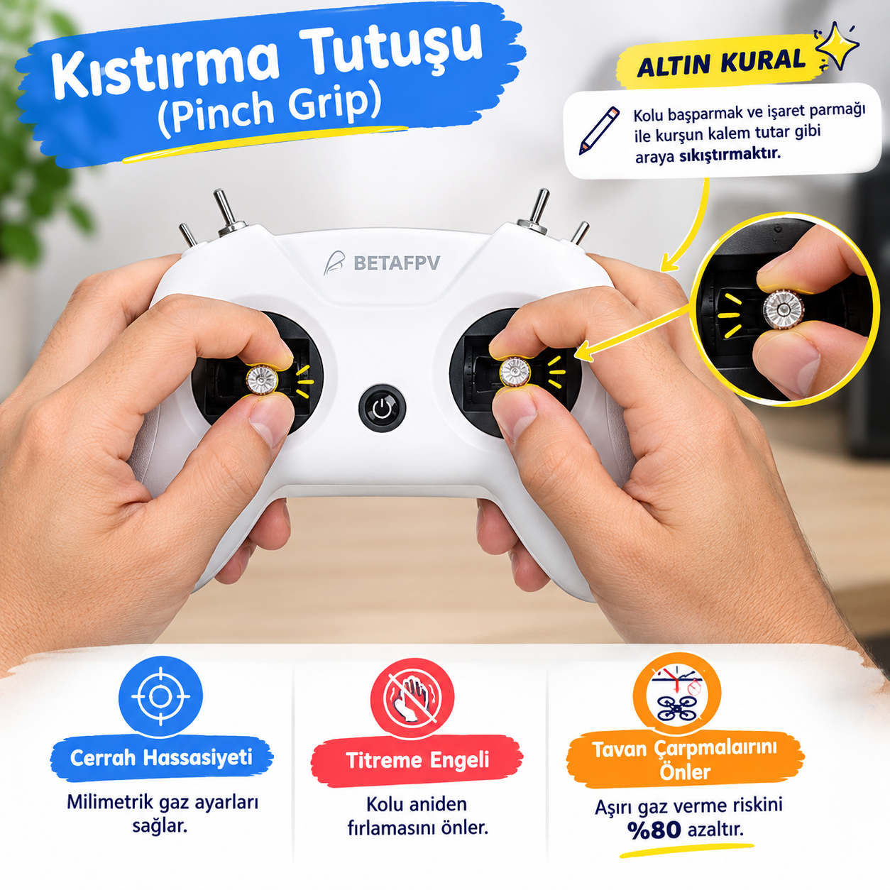
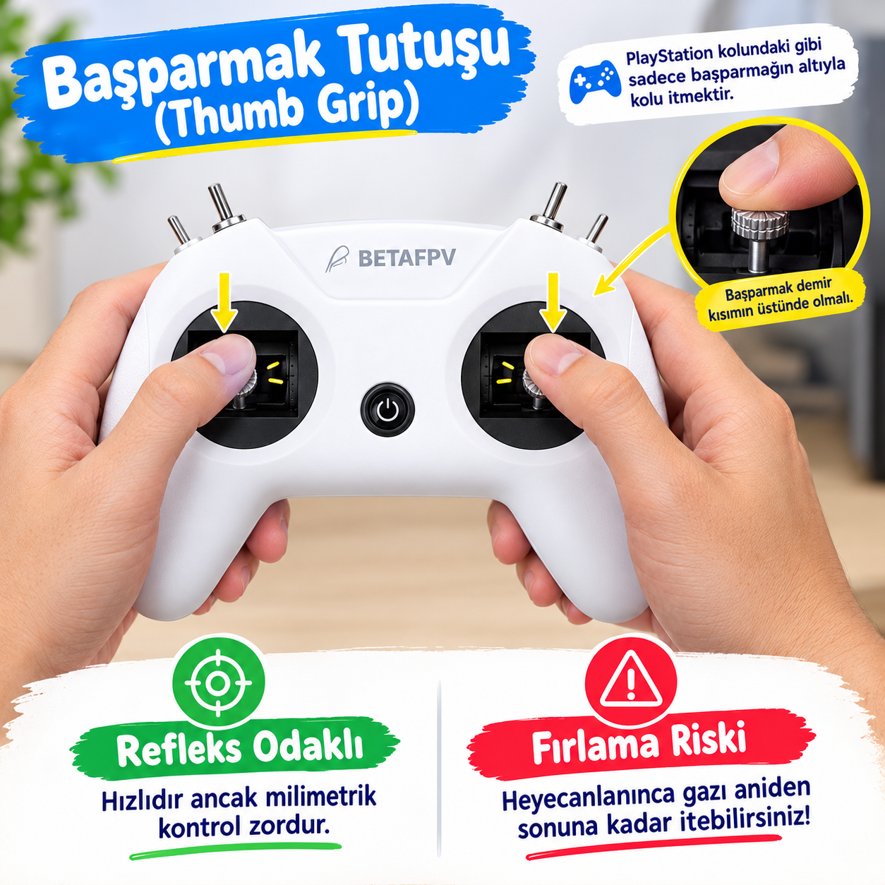

Büyük Simülasyon Günü: Pilotaj Meydanı & Puan Ağacı 🎮⭐
Kumanda hassasiyetini pekiştiriyoruz: Sırayla kalkış yapacak, arkadaşlarımızı puanlayıp günün şampiyonunu seçeceğiz!
🧠 Geçen Hafta Ne Öğrendik? (4. Hafta)
HATIRLATMAKurşun kalem gibi iki parmakla tutarak cerrah hassasiyeti kazandık. Tavan çarpmalarını %80 önledik!
Gazı aniden açmak yok! Milim milim kaldırarak tavana çarpmadan 1.0–1.5m irtifada sabit durduk (Hovering).
Daima dengeli Angle modunda uçtuk; kaza anlarında kumandadaki SC anahtarıyla oyunu anında baştan başlattık.
🎯 Bugün Ne Yapacağız? (5. Hafta)
DERS AKIŞIAkıllı tahtada hazırladığımız sistemle sıradaki pilotları kura çekerek sahneye çağırıyoruz!
Bilgisayarı bağlayıp FPV SkyDive'da kontrollü kalkış, 5 saniye hover ve iniş görevini yapıyoruz.
Tüm sınıf arkadaşının uçuşuna 1-5 arası puan verir, ortalamayı Puan Ağacı'na işleyip günün birincisini seçeriz!
Kumanda Tutuş Sanatı: Kıstırma (Pinch) vs Başparmak (Thumb) 🎮
Uçuşa başlamadan önce hatırlayalım: Bir cerrah gibi mi tutuyoruz, oyun konsolu gibi mi?
🤏 Kıstırma Tutuşu (Pinch Grip)
ALTIN KURAL ⭐
👍 Başparmak Tutuşu (Thumb Grip)
OYUN KONSOLLARI 🎮
Pilot Seçici & Puan Ağacı Ekranı 🛸⭐
Sıradaki pilotu kura ile belirliyoruz, uçuş bitince sınıfın verdiği ortalama puanı anında sisteme kaydediyoruz!
Bilgisayar Simülasyonu: 90 Saniyelik Uçuş Görevi ⏱️🚁
Her öğrenci bilgisayara bağlı kumandayı alır ve tahtadaki canlı yayında 3 kritik aşamayı tamamlar:
Kumandadaki sıfırlama tuşunu kullanarak kaza anında anında yeniden başlayabilirsiniz. Hızlı uçmak puan kazandırmaz; sakin, yumuşak ve kontrollü uçan pilot tam puan alır!
Arkadaşımıza Nasıl Puan Veriyoruz? (1-5 Yıldız Kuralı) ⭐📊
Pilot uçuşunu bitirdiğinde tüm sınıf jüri olur! Parmaklar havaya kalkar ve Hüseyin Hoca ortalamayı sisteme işler:
Puan Ağacı Şampiyonları & Gelecek Hafta! 🚀✨
Tebrikler pilotlar! Bugün herkes hem kumandada uçuş yaptı hem de jüri koltuğunda arkadaşlarını değerlendirdi!
⭐ Bugünkü Uçuş Başarılarımız
5. HAFTA ÖZETİTavana ve zemin engellerine çarpmadan irtifayı göz kararı milimetrik sabitlemeyi öğrendik.
Hataları ve başarıları izleyerek havacılıkta adil puanlama ve eleştiri kültürünü deneyimledik.
Sınıfın en sakin ve hassas pilotlarını altın 🥇, gümüş 🥈 ve bronz 🥉 rozetlerle alkışladık!
🚀 Gelecek Hafta Ne Var?
MÜJDESağa-sola dönüşler (Yaw), ileri-geri süzülmeler (Pitch/Roll) ve engellerin arasından güvenli geçiş teknikleri!